Isaac Newton: English (1642–1727)
As we embark on the life of perhaps the most important mathematician and physicist in history, we begin with an overview of his very modest lifestyle. Isaac Newton was born December 25, 1642, in a small town of Woolsthorpe-by-Colsterworth, in the County of Lincolnshire, England. Unfortunately, his father died three months before Isaac was born. As a tiny, premature baby, Newton was not expected to live, yet he did so for eighty-four years! When Newton was two years old, his mother remarried and decided to live with her new husband, the wealthy minister Barnabas Smith, whom the young Newton did not like. Newton was then left in the care of his maternal grandmother, Margery Ayscough. He seemed to be sour at his mother for marrying Smith. She then had three additional children in this second marriage.
Newton attended the King’s School in Grantham, England, from the ages of twelve to seventeen; in addition to learning Latin and Greek, he had his first exposure to mathematics there. He returned to his original home in 1653 to live with his mother, who by then was widowed for a second time. There, in Woolsthorpe-by-Colsterworth, his mother urged him to do farming, which certainly did not suit Newton. Soon thereafter, the head of the King’s School urged his mother to return him to school to finish his education, which she did, allowing Newton to begin to exhibit his brilliance and to become the school’s top student. It should be said, though, that these early years caused him some psychological difficulties that accompanied him the rest of his life.
His excellence in school as well as the recommendation of his uncle, who was an alumnus of Trinity College at Cambridge, enabled him to be admitted to the college in 1661. Soon thereafter, he eventually earned a full scholarship. During his undergraduate studies, he began to immerse himself in Aristotle’s work and philosophy. However, he also discovered the writings of French mathematician René Descartes, which guided Newton in a new direction and seemed to define the rest of his life. More specifically, Descartes’s “La Géométrie” allowed him to focus on seeking algebraic solutions to geometric problems, which he felt was a much more conclusive way to solve problems. The works of Galileo and Kepler further strengthened his thinking in the direction of a heliocentric system of the universe. He made notes, titled Quaestiones quaedam philosophicae, in which he listed his thoughts on mechanical philosophy, guided by the best thinking of the times and his own imagination. In 1665, Newton expanded the binomial theorem (see fig. 17.4) by including fractional powers, which led him on the path to his development of what we today know as infinitesimal calculus.
In August 1665, Newton received his bachelor’s degree and left the university, as it was closed for two years due to the Great Plague that dominated England. During the next two years, he stayed home, concentrating on private studies and further developing his theories of calculus, optics, and the law of gravitation.
Newton was elected as a fellow of Trinity College at Cambridge University in 1667, where he refused to become an ordained priest, which was previously a requirement for fellows at Cambridge. Initially, this precondition was not strictly enforced; but, by 1675, it became a requirement. Only through special permission from Charles II was Newton able to avoid becoming an ordained priest. In 1669, one year after receiving his master’s degree, Newton succeeded Isaac Barrow, becoming the second Lucasian professor. During this time, Newton summarized his work by writing De analysi per aequationes numero terminorum infinitas (On Analysis by Infinite Series), which was shared with a limited audience and enabled his name to become better known. Soon thereafter, he wrote a revised form, Tractatus de methodis serierum et fluxionum (Treatise on the Methods of Series and Fluxions). In this work, he introduced the word fluxions, which is an indication of the birth of calculus. (More about this later.) In 1672, with his reputation for brilliance expanding, he was elected as fellow of the Royal Society.
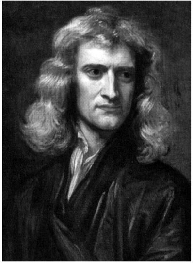
Figure 17.1. Isaac Newton. (Portrait by Sir Godfrey Kneller, 1689.)
It is also well known that about the same time as Newton’s work on calculus became popular, the German mathematician Gottfried Wilhelm Leibniz (1646–1716) developed differential and infinitesimal calculus using completely different symbols. Leibniz’s symbols are largely still in use today, as opposed to Newton’s symbols, which are no longer used. It should be noted that Newton and Leibniz were in bitter disagreement regarding who should be credited with the development of calculus; this disagreement grew to the point where, beginning in 1699, members of the Royal Society started to accuse Leibniz of plagiarism. There is evidence to show that Newton generated this ill feeling, which continued until Leibniz’s death in 1716.
Newton was probably best known for his discoveries in the field of physics, where he made great advances in the field of optics; in particular, he discovered the spectrum of light by splitting white light through a prism. He was also well known for his significant improvements in the development of a telescope. Yet he is probably best known for his three laws of motion, which were presented in his famous book Philosophiæ Naturalis Principia Mathematica (Mathematical Principles of Natural Philosophy), commonly known as the Principia, which was first published in 1687 (see fig. 17.2).
The first law of motion states that every object will remain at rest, or in uniform motion along a straight line, unless affected by an external force. The second law, sometimes referred to as the law of force and acceleration, states that a force on an object to accelerate is equal to the product of mass and acceleration, or, to put it another way, the acceleration of an object is directly proportional to the force and inversely proportional to the mass of the object. The third law states that for every action there is a reaction, that is, an action in the opposite direction.
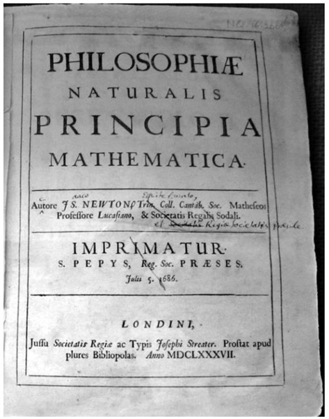
Figure 17.2. Newton’s personal copy of Principia Mathematica, with his own comments included, in 1686.
There aren’t many examples of Newton’s mathematical discoveries that can be presented to the general readership, but we will offer just a few of them here. Together with the English mathematician Joseph Raphson (1648–1715), Newton developed what is today referred to as the Newton-Raphson method of square-root extraction. In 1690, Raphson published Analysis Aequationum Universalis, which included a method that is a simpler version of what Newton published in his Method of Fluxions. Newton wrote this latter work in 1671, but it was not published in English until 1736 (see fig. 17.3). Raphson was a strong supporter of Newton’s work, especially when it came to crediting him, not Leibniz, with discovering calculus.
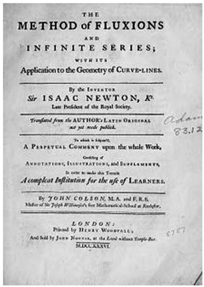
Figure 17.3. Newton’s Method of Fluxions.
Let us now investigate how the Newton-Raphson method allows us to extract the square root of a number in a rather simple way, one that truly makes sense when compared to other more automatic algorithms that are not as easily intuitively justifiable. Perhaps it easier to view this method through an example.
Consider finding
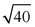
. We know that this number is somewhere between and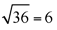
and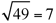
. We will guess that the value is about 6.3. If this number were correct, and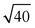
were equal to 6.3, then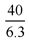
would have to be equal to 6.3. But it is not the case, since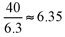
.Therefore, we know that the number we seek as the square root of 40 must be somewhere between 6.3 and 6.35. We will take the average of these two numbers:
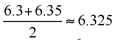
.We now continue the process with
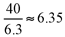
and then we try to see if this value is actually the square root of 40. If it is the correct value, then by dividing 40 by 6.3241, the quotient would also have to be 6.3241. However,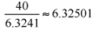
.Once again, taking the average gets us another decimal place closer to the actual value of
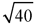
. Thus,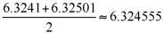
.We can continue this process to get as accurate a value for the square 2 root of 40 as we wish. Notice that with each step in the process we move one decimal place closer to the value of
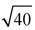
. When we compare this to the calculator-generated value for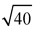
, we get 6.324555320336759 . . . , which allows us to see how nicely the Newton-Raphson method brings us to a fine approximation for the square root of 40.We also credit Isaac Newton with the further development of the binomial theorem, which is presented to most folks during their high-school mathematics instruction. You may recognize the pattern by inspecting the first several applications shown in figure 17.4. Furthermore, if you focus on the coefficients of each of the terms in the binomial expansion, you will notice the Pascal triangle emerging.
In general form, the binomial theorem can be expressed in the following fashion:
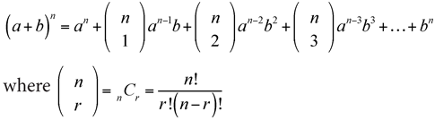
However, Newton’s contribution was highlighted by the fact that he was able to conclude that the binomial theorem was also true for fractional or irrational powers, where n could also be a fraction or even a value of the form of
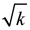
. Here, what was a finite sum now becomes an infinite series. Newton did so much in mathematics and physics that our short chapter could hardly touch on even a small fraction of his works. He was the first to employ coordinate geometry to solve Diophantine equations (which we encountered in chap. 8). Newton said that he preferred the geometrical methods to algebraic ones, as he felt that they were clearer and more rigorous. Further pursuits of these extensions take us to a more advanced level, which is beyond the scope of this book.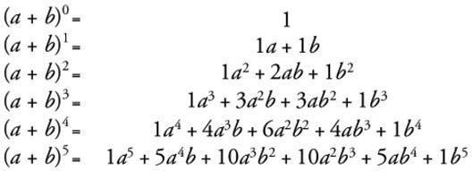
Figure 17.4. Binomial theorem.
It is curious that Newton’s psychological difficulties kept much of his work on pure mathematics shared with only his colleagues and other select correspondents, until 1704, when he published his book Opticks. At that time, he published works on the quadrature of curves and also on the classification of cubic curves. This was actually the first time that Newton published his ideas on the method of fluxions, the precursor of today’s calculus. Although he hinted at it in his Principia, it was actually Leibniz’s paper in 1684 that would put calculus in the public forum. As we mentioned earlier, there were many bilateral accusations of plagiarism, even though it is clear that both mathematicians came upon their discoveries independently. It should also be said that this experience once again demonstrated Newton’s psychological imbalance. Newton’s further mathematical publications evolve from his Cambridge lectures, which he delivered from 1673 to 1683, and which were first published as late as 1707.
By the 1690s, Newton began to delve into religious thinking, and he wrote about his interpretations of the Bible both literally and symbolically. There has been much controversy about Newton’s belief of the doctrine of the Trinity in the New Testament, but there was no conclusive evidence to close the case. Despite these doubts, he was a devout Protestant and opposed any Catholic infiltration. In his various scientific writings later in life, Newton expressed a strong sense of God’s providential role in nature.
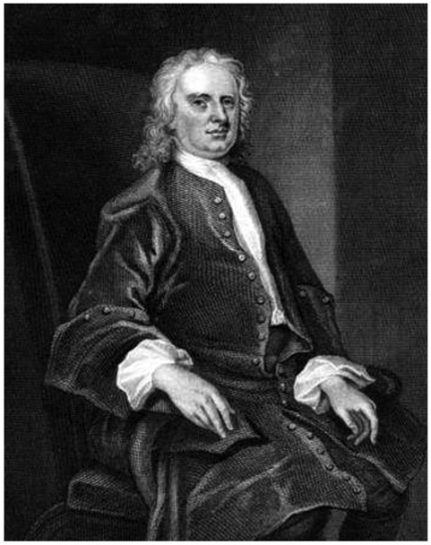
Figure 17.5. Sir Isaac Newton. (Stipple engraving of Isaac Newton, by John Vanderbank, at the National Library of Wales, based on a 1725 portrait in the collection of the Royal Society.)
In the years 1689–1690 and 1701–1702, Newton represented Cambridge University in the English Parliament. He was delighted to assume the post of warden of the Royal Mint in 1696; in this position, he was in charge of a major re-coining process in England. Three years later, he became the master of the Mint, a position that he held for the last thirty years of his life. Although these Mint positions might have been considered somewhat sinecures, Newton took them so seriously that he retired from Cambridge University and moved to London in 1701 so that he could properly police the English currency against counterfeiters. He found that about 20 percent of the coins produced during the great recoinage in 1696 were counterfeit. It should be noted that, at that time, counterfeiting was considered high treason and punishable by death. Newton proved quite adept at catching and prosecuting counterfeiters. This was the beginning of the end of his scientific career. During this time, he also had some psychological breakdowns, under the influence of which, through written correspondence, he alienated colleagues and broke off relationships with such luminaries as John Locke. Postmortem investigations indicate that mercury poisoning might explain Newton’s eccentricities in later life. In time, he recovered his senses and continued his Mint activities, which brought him a rather handsome salary and made him a relatively rich man.
In April 1705, Newton was knighted by Queen Anne during a visit to Trinity College at Cambridge. It is still speculated today that Newton received a knighthood as a political gesture rather than as an acknowledgment of his scientific brilliance or his service as master of the Mint.
In the waning years of his life, Newton lived in Cranbury Park near Winchester, England, with his niece, Catherine Barton Conduitt, and her husband, John Conduitt. By this time, he was considered one of the most famous scientists of his day and was quite wealthy and generous to charities. A lifelong bachelor, Newton died in London on March 20, 1727; he was buried in Westminster Abbey.